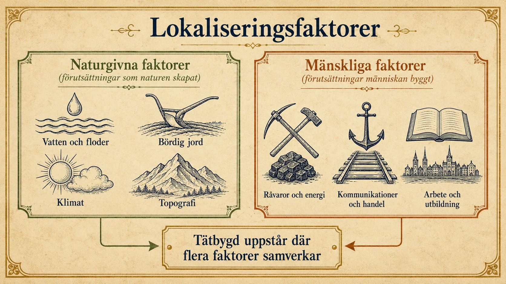
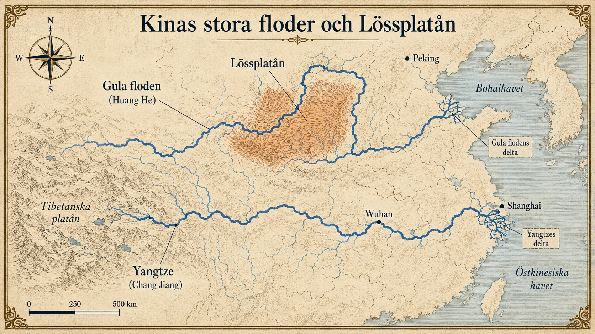
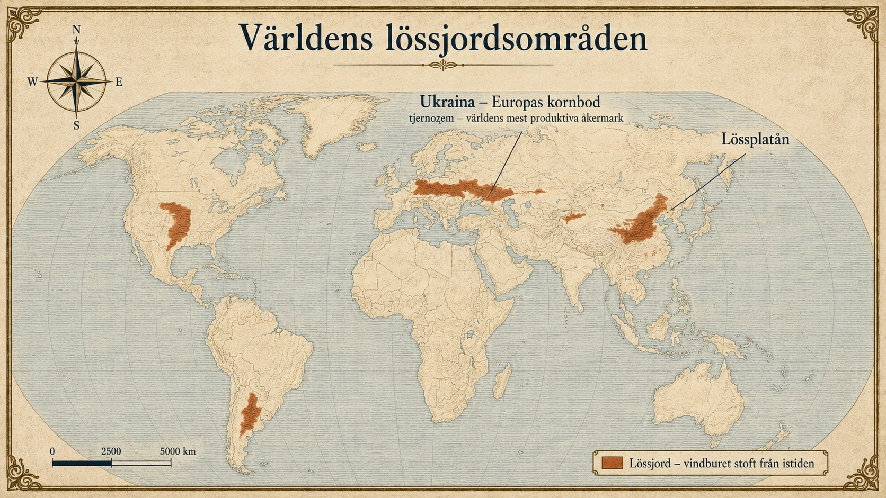
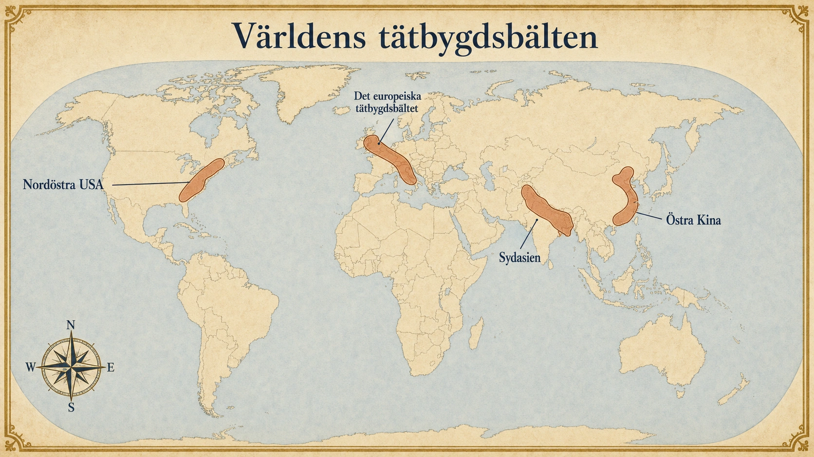
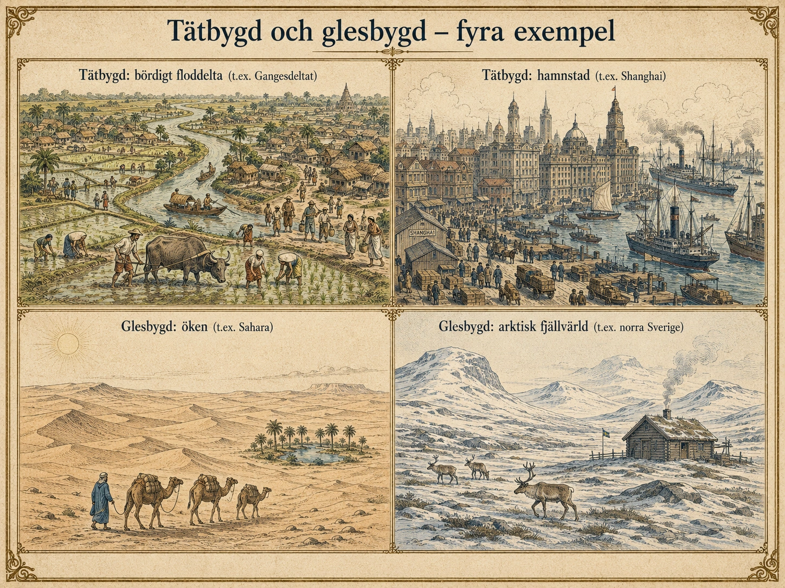

Befolkningens lokaliseringsfaktorer
— Varför bor människor där de bor —
Var bor människor? Tätbygder, glesbygder och lokaliseringsfaktorer
I förra avsnittet såg vi att människor är ojämnt fördelade över jorden. Drygt 90 procent av världens befolkning lever på mindre än 10 procent av landytan. Det är en remarkabel siffra. Nu ska vi förstå varför det blivit så — och varför just vissa områden blivit så tätbefolkade medan andra nästan står tomma.
Människor söker sig genom historien till platser där det är möjligt – och helst lätt – att leva. Vissa områden blir mycket tätbefolkade, andra nästan tomma. Geografer beskriver detta med begreppen tätbygd och glesbygd, och de förklarar mönstret med lokaliseringsfaktorer.
En lokaliseringsfaktor är något som gör en plats mer eller mindre lämplig att bo på, odla på, bygga städer på eller utveckla handel och industri på. Tänk på det som en lista över egenskaper en plats kan ha eller sakna. Ju fler positiva egenskaper en plats har, desto mer attraktiv blir den för människor att bosätta sig på. Faktorerna brukar delas in i två grupper:
- Naturgivna lokaliseringsfaktorer – vatten, jord, klimat och topografi. Det är förutsättningar som naturen själv har skapat, och som människan inte enkelt kan ändra på.
- Mänskliga lokaliseringsfaktorer – råvaror, kommunikationer, arbete, utbildning och tradition. Det är förutsättningar som människan själv har byggt upp över tid, och som kan förändras när samhället förändras.
I praktiken samverkar de två grupperna. En plats blir tätbefolkad när flera faktorer från båda grupperna fungerar tillsammans under lång tid. Och en plats blir glesbefolkad när flera faktorer arbetar emot tät bosättning. Det är sällan en enda orsak — det är ett mönster.

Tätbygd – där människor lever nära varandra
En tätbygd är ett område där många människor bor nära varandra. Det kan vara en storstad, ett stadsbälte som binder ihop flera städer, eller ett bördigt jordbruksområde där människor bott tätt sedan hundratals år tillbaka. Några av världens mest tätbefolkade områden finns i östra och södra Asien — särskilt Kina, Indien, Japan och Bangladesh — kring Nilen i Egypten, i delar av Västafrika, i Europa, i nordöstra USA och kring Río de la Plata i södra Sydamerika.
Dessa områden ligger spridda över hela jorden, men de delar något viktigt: nästan alla ligger där flera lokaliseringsfaktorer samverkar gynnsamt. Det är inte en slump att människor bor där de bor.
Naturgivna faktorer
Vatten och floder
Tillgång till vatten är kanske den allra viktigaste lokaliseringsfaktorn — och skälet är enkelt: utan vatten klarar sig en människa bara några dagar. Men det handlar om mycket mer än bara dricksvatten. Vatten behövs för att odla mat, eftersom alla grödor måste ha regn eller bevattning för att växa. Vatten behövs för att hålla djur — kor, hästar och får dricker stora mängder vatten varje dag. När industrier började växa fram under 1700- och 1800-talen visade det sig att även fabriker behövde stora mängder vatten — för att kyla maskiner, driva ångmaskiner och tillverka varor som papper, tyg och stål.
Floder har spelat en helt avgörande roll, eftersom de löser flera av dessa behov samtidigt. Vid en flod har människor alltid haft färskt vatten att dricka. De har kunnat fiska. De har kunnat leda vatten i kanaler ut till åkrarna — det kallas bevattning — och på så sätt odla även områden som annars varit för torra. Och de har kunnat använda floden för att transportera varor. Det sista är värt att stanna vid: innan det fanns järnvägar och lastbilar var det extremt svårt och dyrt att frakta tunga varor över land. På en flod gick det däremot nästan av sig självt. En tung last spannmål kunde flyta nedströms från ett jordbruksområde till en hamnstad och säljas vidare ut i världen. Floderna fungerade som naturliga motorvägar — och de var i princip gratis att använda.
Det är därför de fyra första stora civilisationerna — i Egypten vid Nilen, i Mesopotamien vid Eufrat och Tigris, i Indusdalen och i Kina vid Gula floden och Yangtze — alla växte fram längs stora floder. Sambandet är inte tillfälligt. Vid floder fanns vatten, bördig jord, transport och fiske samlat på en och samma plats. Det skapade förutsättningarna för att tusentals och senare miljontals människor skulle kunna leva tätt tillsammans.
Kina är ett särskilt tydligt exempel. Landet har två av världens viktigaste floder. Gula floden (Huang He) i norr har under tusentals år översvämmat sina stränder och lämnat tjocka lager av slam, vilket har skapat några av världens bördigaste jordbruksområden. Yangtze i centrala Kina är en av världens största floder och bär ännu idag en stor del av landets jordbruk, fartygstrafik och industri. Östra Kina, där dessa floder rinner ut i Stilla havet, hör till världens absolut tätast befolkade områden — och det är inte en slump. Det är resultatet av att flera lokaliseringsfaktorer har samverkat under tre, fyra tusen år.

Bördig jord
Där jorden är bördig kan jordbruket ge stora skördar, och då kan många människor försörjas på en liten yta. Men vad är det egentligen som gör en jord bördig? Det handlar framför allt om hur mycket näring som finns i marken. Växter behöver bland annat kväve, fosfor och kalium för att växa bra. Där dessa näringsämnen finns rikligt blir skördarna stora. Där de saknas eller är för få blir skördarna små — och då kan färre människor leva på samma yta.
Floddeltan – där en flod rinner ut i havet – är ofta extremt bördiga, och anledningen är intressant. När en flod närmar sig havet bromsas vattnet upp. Då tappar det förmågan att bära med sig sand, lera och organiskt material — det fastnar istället på botten och längs stränderna. Detta material kallas slam, och det är fullt av just de näringsämnen som växter behöver. Över tusentals år bygger floden upp ett tjockt, plant och näringsrikt landområde — själva deltat. Nildeltat i Egypten, Gangesdeltat i Bangladesh och Mekongdeltat i Vietnam försörjer alla miljontals människor på små ytor just därför. När en bonde plöjer jorden i Nildeltat plöjer hen i material som Nilen hämtat ända från Etiopien och lagrat ned under hundratusentals år.
Lössjord är en annan särskilt bördig jordtyp, men den har en helt annan ursprungshistoria. Lössjord bildades under och efter istiden av vindburet stoft som blåste över glaciärerna och lagrades i tjocka lager nedanför iskanten. Den är finkornig, lätt att bearbeta och näringsrik. Två av världens viktigaste lössområden är Ukraina och Lössplatån i Kina. Ukrainas svarta jord, tjernozem, räknas till världens mest produktiva åkermark — den kan vara flera meter tjock och innehåller enorma mängder växtnäring. Det är ingen slump att Ukraina länge varit en av världens största veteproducenter och fått smeknamnet "Europas kornbod". På samma sätt är Lössplatån i norra Kina ett av de mest produktiva jordbruksområdena i världen.

Klimat
Klimatet bestämmer mycket av en plats förutsättningar. Det handlar inte bara om temperatur — det handlar om hur lång växtsäsongen är, alltså den tid på året då det är tillräckligt varmt för att grödor ska kunna växa. Det handlar om hur mycket regn som faller, och om regnet kommer regelbundet eller oregelbundet. På en plats med kort växtsäsong hinner bara vissa grödor mogna. På en plats med oregelbunden nederbörd kan en torrperiod slå ut en hel skörd och leda till svält.
Det är därför de flesta tätbygder ligger i klimat där jordbruket fungerar bra under en stor del av året. I tempererade klimat — med fyra årstider och lagom temperatur och nederbörd, som i Västeuropa, delar av Kina och Nordamerika — kan man odla en lång rad grödor som vete, råg, potatis och äpplen. I subtropiska klimat, som i södra USA, södra Kina och norra Indien, är det varmt nästan hela året och ofta blött, vilket passar grödor som ris, bomull och te. I medelhavsklimat — med mild vinter och torr sommar, som i Sydeuropa och Kalifornien — växer oliver, druvor och citrusfrukter särskilt bra.
Extrema klimat — för kallt, för hett, för torrt eller för blött — undviks oftast för fast bosättning. Det betyder inte att människor inte kan leva där. Det betyder att färre människor kan leva där per kvadratkilometer, eftersom det krävs mer arbete, mer skydd och mer transporter för att överleva. Då blir det svårt för stora samhällen att uppstå.
Topografi
Höjd och terräng spelar också roll. Få människor bor över 2000 meter över havet. På den höjden blir luften tunnare — det betyder att det finns mindre syre per andetag, och människan blir lättare trött. Klimatet är dessutom kallare ju högre upp man kommer, eftersom temperaturen sjunker med ungefär 6 grader per 1000 meter höjd. Det blir därför svårare att odla, svårare att bygga vägar och svårare att försörja stora samhällen. Branta berg och kalfjäll är därför oftast glest befolkade. Slätter och lågländer är däremot lätta att odla, bygga vägar genom och bosätta sig på — och det är där människor genom historien helst slagit sig ner.
Mänskliga faktorer
Råvaror och energi
Människor har också ofta bosatt sig där det finns råvaror – naturtillgångar som kan användas för att tillverka saker eller skapa energi. Det kan vara järnmalm, stenkol, olja eller fallande vatten som kan driva kvarnar och senare turbiner. Under industrialiseringen, som tog fart i Europa under 1700- och 1800-talen, blev sådana resurser plötsligt avgörande för var samhället växte.
Ett konkret exempel: för att tillverka stål krävs både järnmalm och en bränslekälla att smälta järnet med — vanligtvis stenkol. Innan järnvägar och billiga transporter fanns var det dyrt att frakta tonvis av tunga material långa sträckor. Därför uppstod stora industristäder just där järnmalm och kol fanns nära varandra. Tyska Ruhrområdet, engelska Midlands och staden Pittsburgh i USA blev alla viktiga stålcentra av just detta skäl. Och när industrierna växte fram skapades arbeten, vilket lockade dit människor från landsbygden. Städerna växte snabbt — befolkningen följde efter råvarorna.
Kommunikationer och handel
Med kommunikationer menas möjligheten att transportera människor, varor och information. Floder, hav, hamnar, vägar och järnvägar har gjort vissa platser betydligt mer attraktiva. En stad vid en bra hamn kan handla med hela världen — varor som tillverkas där kan skeppas ut, och varor som behövs där kan skeppas in. En stad där flera vägar möts blir en knutpunkt där människor naturligt stannar för att vila, byta hästar (förr) eller byta tåg (senare), och där handel uppstår.
Många av världens största städer ligger därför vid kuster, flodmynningar eller historiska handelsvägar — New York, Shanghai, Rotterdam, Mumbai, Istanbul. Goda kommunikationer drar till sig handel, handel drar till sig människor, och människor drar till sig fler kommunikationer. Det blir ett självförstärkande mönster.
Arbete, utbildning och nätverk
I modern tid har människor i allt högre grad flyttat dit jobben och utbildningarna finns. Universitet, sjukhus, teknikkluster och kulturliv drar till sig människor — särskilt yngre människor som söker en framtid. Storstadsregioner växer ofta eftersom de som flyttar dit hittar fler möjligheter och fler andra människor. Företag etablerar sig där det finns utbildad arbetskraft. Utbildad arbetskraft söker sig dit företagen finns. Det blir, precis som med kommunikationerna, ett mönster som förstärker sig självt över tid.
Vi återkommer till detta i avsnitten om migration och urbanisering, eftersom det är där dessa moderna lokaliseringsfaktorer spelar sin största roll.
Världens tätbygdsbälten
När man tittar på en världskarta över befolkningsfördelning ser man att tätbygderna inte ligger slumpmässigt. De bildar bälten — sammanhängande områden där flera lokaliseringsfaktorer samverkar:
- Det europeiska tätbygdsbältet sträcker sig från London genom Belgien, Nederländerna, västra Tyskland och vidare ner mot norra Italien. Här har bördig jord, floder (Rhen, Donau, Po), hamnar, lång handelstradition, industri och milt klimat samverkat under tusen år. Området kallas ibland för "den blå bananen" på grund av sin form på kartan.
- Östra Kina – kring Yangtze och Gula floden, med bördig jord, milt klimat, lång jordbrukstradition och idag enorma industristäder som Shanghai och Guangzhou.
- Sydasien – Gangesslätten i norra Indien och Bangladesh, med bördig flodjord, varmt klimat och en tusenårig jordbruks- och stadshistoria.
- Nordöstra USA – atlantkustens hamnar, järnvägar, industri, råvaror och kraftig invandring under 1800-talet skapade en kedja av storstäder från Boston via New York till Washington.

Mönstret är detsamma överallt: flera lokaliseringsfaktorer som arbetar tillsammans under lång tid. Inte en faktor, utan ett samspel.
Glesbygd – där få människor bor utspridda
En glesbygd är ett område där få människor bor utspridda över stora ytor. Glesbygder finns oftast där naturförutsättningarna gör det svårt – eller mindre lockande – att bosätta sig många på samma plats.

Det är viktigt att inte missförstå begreppet. Glesbygd är inte detsamma som "underutvecklad" eller "tom". Människor lever och har levt i glesbygd i alla tider. I många glesbygder finns välfungerande samhällen, kultur, näringar och historia. Norra Sverige är ett bra exempel: stora delar av Norrland och Lappland är glesbygd, men där finns städer, samiska samhällen, gruvor, skogsbruk och avancerad teknik. Det som kännetecknar glesbygden är helt enkelt att antalet människor per kvadratkilometer är lågt — inte att livet där är sämre.
Det finns några vanliga orsaker till glesbygd.
För kallt. I jordens nordligaste och sydligaste delar är temperaturen så låg under stora delar av året att jordbruk i princip inte är möjligt. Växtsäsongen kan vara så kort som två eller tre månader, och under den korta tiden hinner bara enstaka grödor mogna. Sibirien, norra Kanada, Grönland och Antarktis är extremt glest befolkade just därför. Höga bergsområden har liknande problem — temperaturen sjunker som vi sett med höjden, så i Anderna, Himalaya och Alperna är många områden glest befolkade trots att de ligger på lägre latituder. De som ändå bor i kalla områden får ofta leva av andra näringar än traditionellt jordbruk: jakt, fiske, renskötsel eller gruvdrift.
För torrt. I öknar faller mycket lite nederbörd — ofta under 250 millimeter per år, vilket är mindre än en fjärdedel av vad Sverige får. Utan vatten blir det svårt att odla, svårt att hålla större antal djur och svårt att försörja stora samhällen. Sahara, Arabiska öknen, Gobi, Atacama och Australiens inland har stora glest befolkade områden. Människor bor ofta vid oaser, längs floder eller vid kuster där det finns vatten, men öknarnas inre delar är nästan tomma.
För blött och näringsfattigt. Det kan tyckas konstigt att tropiska regnskogar är glest befolkade — där är ju gott om vatten och växtlighet. Men i regnskogen är jorden ofta näringsfattig. De flesta näringsämnena är bundna i växterna och inte i marken, eftersom det varma och blöta klimatet får organiskt material att brytas ned snabbt och tas upp av växterna direkt. När skog tas bort förlorar jorden snabbt sin bördighet, och stora jordbruk blir svåra att upprätthålla. Dessutom finns ofta sjukdomar, insekter och svår framkomlighet att räkna med. Amazonas, Kongobassängen och delar av Sydostasien är därför glest befolkade trots det varma klimatet och de stora vattentillgångarna.
Sammanfattning
Människor bor där flera lokaliseringsfaktorer samverkar gynnsamt. Det handlar om naturens förutsättningar – vatten, bördig jord, lagom klimat, framkomlig topografi – och om människans egna förutsättningar – råvaror, kommunikationer, arbete och utbildning. Tätbygder uppstår där dessa faktorer förstärker varandra under lång tid. Glesbygder finns där en eller flera faktorer gör tät bosättning svår eller mindre attraktiv.
Det är viktigt att se att det nästan aldrig är en enskild faktor som avgör. Det är samspelet — kombinationen av flera gynnsamma förutsättningar som arbetar tillsammans över hundratals eller tusentals år. Det är därför Nildeltat varit tätbefolkat i 5000 år. Det är därför östra Kina är världens tätaste område idag. Och det är därför stora delar av Sahara förblivit nästan tomma.
Genom att förstå dessa mönster kan vi börja förklara varför världens befolkning ser ut som den gör — inte bara att den är ojämnt fördelad. I nästa avsnitt går vi vidare till frågan om hur befolkningar förändras över tid: den demografiska transitionen.
Var bor människor? Tätbygder, glesbygder och lokaliseringsfaktorer
I förra avsnittet såg vi att människor inte bor jämnt över jorden. Faktiskt lever 90 procent av världens människor på bara 10 procent av landytan. Det är en väldigt sned fördelning. Nu ska vi förstå varför det blivit så.
Människor söker sig till platser där det är lätt att leva. Vissa områden blir mycket tätbefolkade. Andra blir nästan tomma.
Vi använder tre viktiga ord:
- En tätbygd är ett område där många människor bor nära varandra.
- En glesbygd är ett område där få människor bor utspridda över stora ytor.
- En lokaliseringsfaktor är något som gör en plats bra eller dålig att bosätta sig på.
Lokaliseringsfaktorer delas in i två grupper:
- Naturgivna faktorer — vatten, jord, klimat och topografi. Det som naturen själv har skapat.
- Mänskliga faktorer — råvaror, kommunikationer, arbete och utbildning. Det som människan själv har byggt upp.
Tänk så här: en plats blir tätbefolkad när flera faktorer från båda grupperna fungerar tillsammans. En enskild faktor räcker oftast inte.
Bilden visar de två grupperna sida vid sida.
- Vänster sida visar naturgivna faktorer: vatten, jord, klimat och topografi (berg/slätter).
- Höger sida visar mänskliga faktorer: råvaror, kommunikationer och arbete.
- Pilarna i mitten visar att en tätbygd uppstår där flera faktorer samverkar.
Fundera: Vilka faktorer tror du har gjort just din hemort tät- eller glesbefolkad?
Tätbygd – där många bor nära varandra
En tätbygd är ett område med många människor på liten yta. Det kan vara:
- en storstad
- ett område med flera städer som vuxit ihop
- ett bördigt jordbruksområde där människor bott länge
Världens mest tätbefolkade områden finns i:
- östra och södra Asien (Kina, Indien, Japan, Bangladesh)
- Europa
- nordöstra USA
- området kring Nilen i Egypten
Tänk så här: dessa platser ligger på olika sidor av jorden, men de delar en sak. På varje plats samverkar flera lokaliseringsfaktorer.
Naturgivna faktorer
- Vatten är viktigast — utan det dör människor på några dagar
- Floder gav vatten, bördig jord OCH transport på samma plats
- De fyra första civilisationerna växte alla fram vid floder
- Bördig jord, lagom klimat och slätter gör platser bra att bo på
Vatten och floder
Vatten är kanske den allra viktigaste lokaliseringsfaktorn. Skälet är enkelt: utan vatten dör en människa på några dagar.
Men det handlar om mer än bara dricksvatten. Vi behöver vatten till många saker:
- Att dricka
- Att odla mat (alla grödor behöver vatten)
- Att hålla djur (kor, hästar och får dricker stora mängder vatten)
- Att driva fabriker (industrier behöver mycket vatten)
Floder har varit avgörande genom hela historien. Vid en flod kunde människor:
- få färskt vatten att dricka
- fiska
- leda vatten ut till åkrarna — det kallas bevattning
- transportera varor
Det sista är extra viktigt. Innan det fanns järnvägar och lastbilar var det väldigt svårt att frakta tunga varor över land. På en flod gick det däremot lätt. En tung last spannmål kunde flyta nedströms från en bondes åker till en hamnstad. Floder var som naturliga motorvägar — och de var gratis.
Det är därför de fyra första stora civilisationerna alla växte fram vid floder:
- Egypten vid Nilen
- Mesopotamien vid Eufrat och Tigris
- Indusdalen (i nuvarande Pakistan)
- Kina vid Gula floden och Yangtze
Vid en flod fanns vatten, bördig jord, transport och fisk på samma plats. Det gjorde det möjligt för många tusen människor att leva tätt tillsammans.
Kina är ett särskilt tydligt exempel. Landet har två av världens viktigaste floder. Gula floden i norr har under tusentals år översvämmat sina stränder och lämnat tjocka lager av näringsrikt slam. Yangtze i centrala Kina är en av världens största floder. Östra Kina, där dessa floder rinner ut i havet, är ett av världens absolut tätast befolkade områden.
Bilden visar östra Kina med dess två viktigaste floder.
- Följ Gula floden (Huang He) från Tibetanska platån till Bohaihavet i norr.
- Följ Yangtze (Chang Jiang) från Tibet till Shanghai i öst.
- Hitta Lössplatån mellan flodernas armar — en av världens viktigaste lössjordar.
- Lägg märke till att Peking och Shanghai ligger nära flodernas mynningar.
Fundera: Varför tror du att Kinas största städer ligger just nära floderna och kusten?
Bördig jord
Där jorden är bördig kan jordbruket ge stora skördar. Då kan många människor försörjas på liten yta.
Vad gör en jord bördig? Det handlar om hur mycket näring som finns i marken. Växter behöver näringsämnen för att växa bra. Där det finns mycket näring blir skördarna stora.
Det finns två särskilt viktiga bördiga jordtyper:
Floddeltan är områden där en flod rinner ut i havet. Där bromsas vattnet upp, och då släpper det ifrån sig slam — finkornigt och näringsrikt material. Under tusentals år bygger floden upp ett tjockt, plant och bördigt land. Exempel: Nildeltat i Egypten och Gangesdeltat i Bangladesh.
Lössjord bildades under istiden av vindburet stoft som lades i tjocka lager. Den är finkornig, lätt att odla och näringsrik. Två områden är särskilt viktiga:
- Ukraina — kallas ofta "Europas kornbod". Den svarta jorden där räknas till världens mest produktiva åkermark.
- Lössplatån i Kina — också ett av världens bästa jordbruksområden.
Kartan visar var i världen det finns lössjord — bördig jord som bildades av vindburet stoft under istiden.
- Hitta Ukraina (den röda fläcken som ledlinjen pekar på). Här finns "Europas kornbod".
- Hitta Lössplatån i norra Kina — det stora röda området längst åt höger.
- Lägg märke till att lössjord också finns i mindre områden i USA, Argentina och Centraleuropa.
Fundera: Det är ingen slump att Ukraina ofta kallas Europas kornbod. Vad gör just den jorden så bra för jordbruk?
Klimat
Klimatet bestämmer hur lätt det är att odla, leva utomhus och bygga samhälle.
Ett viktigt ord är växtsäsong — den tid på året då det är tillräckligt varmt att grödor kan växa. På en plats med kort växtsäsong hinner bara vissa grödor mogna.
De flesta tätbygder ligger i klimat där det går att odla en stor del av året:
- Tempererat klimat (fyra årstider, lagom temperatur): Västeuropa, delar av Kina och USA
- Subtropiskt klimat (varmt nästan hela året): södra USA, södra Kina, norra Indien
- Medelhavsklimat (mild vinter, torr sommar): Sydeuropa, Kalifornien
Extrema klimat — för kallt, för hett, för torrt eller för blött — gör det svårt att bygga stora samhällen.
Topografi
Höjd och terräng spelar också roll.
- Få människor bor över 2000 meter. På den höjden blir luften tunnare, och det blir kallare. Det är svårare att odla och bygga vägar.
- Branta berg och kalfjäll är oftast glest befolkade.
- Slätter och lågländer är däremot lätta att odla och bygga på.
Mänskliga faktorer
- Råvaror som järnmalm och kol drog till sig industrier — och människor
- Hamnar, vägar och järnvägar gör platser attraktiva för handel
- I våra dagar flyttar människor ofta dit jobben och utbildningarna finns
Råvaror och energi
Människor har också ofta bosatt sig där det finns råvaror — naturtillgångar som kan användas för att tillverka saker. Det kan vara järnmalm, stenkol, olja eller vattenkraft.
Under industrialiseringen (1700- och 1800-talen) blev råvaror plötsligt mycket viktiga. Ett exempel: för att tillverka stål behövs både järnmalm och stenkol (för att smälta järnet). Innan tågen fanns var det dyrt att frakta tunga material långa sträckor. Därför växte stora industristäder fram just där järnmalm och kol fanns nära varandra:
- Ruhrområdet i Tyskland
- Midlands i England
- Pittsburgh i USA
När industrierna växte skapades arbeten. Människor flyttade dit. Städerna växte snabbt. Befolkningen följde råvarorna.
Kommunikationer och handel
Med kommunikationer menar vi möjligheten att transportera människor, varor och information.
- En stad vid en bra hamn kan handla med hela världen.
- En stad där flera vägar möts blir en knutpunkt.
- En stad vid en stor flod kan skicka varor inåt landet.
Många av världens största städer ligger därför vid kuster, flodmynningar eller historiska handelsvägar — som New York, Shanghai, Rotterdam, Mumbai och Istanbul.
Vi pratar mer om hur arbete och utbildning påverkar var människor bor i avsnitten om migration och urbanisering.
Världens tätbygdsbälten
- De största tätbygderna ligger inte slumpmässigt utspridda
- De finns där flera faktorer samverkat under lång tid
- Fyra största bältena: Europa, östra Kina, Sydasien, nordöstra USA
Tätbygderna ligger inte slumpmässigt utspridda över jorden. De bildar bälten — sammanhängande områden där flera faktorer samverkar. De fyra största bältena är:
- Europa-bältet: från London genom Belgien, Nederländerna, västra Tyskland, ner till norra Italien. Här finns bördig jord, floder (Rhen, Donau, Po), hamnar, industri och milt klimat.
- Östra Kina: kring Yangtze och Gula floden. Bördig jord, milt klimat, lång jordbrukstradition och idag enorma städer som Shanghai.
- Sydasien: Gangesslätten i norra Indien och hela Bangladesh. Bördig flodjord och tusenårig jordbrukshistoria.
- Nordöstra USA: hamnar längs Atlanten, järnvägar, industri och invandring under 1800-talet.
Kartan visar var de fyra största tätbygdsbältena ligger.
- Hitta Europa-bältet. Följ det från London ner till norra Italien.
- Hitta östra Kina. Det är ett av världens absolut tätaste områden.
- Hitta Sydasien. Indien och Bangladesh ligger där.
- Hitta nordöstra USA på kartan.
Fundera: Vad har dessa fyra områden gemensamt — trots att de ligger på olika sidor av jorden?
Glesbygd – där få bor på stora ytor
- Glesbygd betyder få människor per yta — INTE underutvecklat
- Tre vanligaste orsaker: för kallt, för torrt, för blött/näringsfattigt
- Människor lever ofta av jakt, fiske, renskötsel eller gruvdrift
En glesbygd är ett område med få människor på stor yta. Det betyder inte att glesbygden är underutvecklad eller tom.
Bilden visar fyra olika landskap — två tätbygder upptill och två glesbygder nedtill.
- Uppe till vänster: bördigt floddelta som Gangesdeltat — många människor, risodlingar, byar längs floden.
- Uppe till höger: hamnstad som Shanghai — skyskrapor, fartyg, livlig handel.
- Nere till vänster: öken som Sahara — vidsträckt, tomt, kameler vid en oas.
- Nere till höger: arktisk fjällvärld som norra Sverige — kallt, glest, renar.
Fundera: Vilka lokaliseringsfaktorer gör de övre bilderna till tätbygder och de nedre till glesbygder?
Norra Sverige är ett bra exempel: stora delar av Norrland är glesbygd, men där finns städer, samiska samhällen, gruvor och näringar. Det som skiljer glesbygd från tätbygd är helt enkelt antalet människor per kvadratkilometer.
Glesbygder uppstår oftast av tre orsaker.
För kallt
I jordens nordligaste och sydligaste delar är temperaturen så låg att jordbruk inte är möjligt på samma sätt som söderut. Växtsäsongen är kort. Sibirien, norra Kanada, Grönland och Antarktis är extremt glest befolkade.
Höga berg har samma problem — det blir kallare ju högre upp man kommer. Anderna, Himalaya och Alperna är därför ofta glest befolkade på högre höjder.
De som ändå bor i kalla områden lever ofta av jakt, fiske, renskötsel eller gruvdrift.
För torrt
I öknar faller mycket lite regn — ofta mindre än en fjärdedel av vad Sverige får. Utan vatten blir det svårt att odla. Sahara, Arabiska öknen, Gobi, Atacama och Australiens inland har stora glest befolkade områden. Människor bor ofta vid oaser, längs floder eller vid kuster, men öknarnas inre delar är nästan tomma.
För blött och näringsfattigt
Det kan låta konstigt att tropiska regnskogar är glest befolkade — där finns ju massor av vatten och växtlighet. Men i regnskogen är jorden ofta näringsfattig. Näringen sitter i växterna, inte i marken. När skogen tas bort förlorar jorden snabbt sin bördighet, och stora jordbruk blir svåra att driva. Amazonas, Kongobassängen och delar av Sydostasien är därför glest befolkade trots det varma klimatet.
Sammanfattning
Människor bor där flera lokaliseringsfaktorer samverkar gynnsamt.
- Naturgivna: vatten, bördig jord, lagom klimat, framkomlig topografi
- Mänskliga: råvaror, kommunikationer, arbete och utbildning
Det är nästan aldrig en enda faktor som avgör. Det är samspelet — flera goda förutsättningar som arbetar tillsammans under lång tid.
Det är därför Nildeltat varit tätbefolkat i 5000 år. Det är därför östra Kina är världens tätaste område idag. Och det är därför Sahara förblivit nästan tom.
I nästa avsnitt går vi vidare till frågan om hur befolkningar förändras över tid: den demografiska transitionen.
1. Flodkulturerna – varför just där, och varför fortfarande?
I standardtexten såg vi att de fyra första stora civilisationerna alla växte fram vid floder: Egypten vid Nilen, Mesopotamien vid Eufrat och Tigris, Indusdalen vid Indusfloden och Kina vid Gula floden och Yangtze. Det är värt att stanna vid varför det blev just dessa platser — och varför sambandet håller i sig än idag, 5000 år senare.
Ingen av dessa civilisationer uppstod av slump. De delar nämligen en mycket specifik kombination av förhållanden. Alla fyra ligger i halvtorra till torra klimatzoner med floder som rinner genom områdena från fuktigare källor långt borta. Det gav två viktiga fördelar samtidigt: stabilt vatten även när det inte regnade lokalt, och regelbundna översvämningar som lämnade näringsrikt slam. Nilen översvämmade Egypten varje sommar med en sådan precision att egyptierna byggde hela sin kalender kring händelsen. Tigris och Eufrat var mer oberäkneliga, men ändå förutsägbara nog för att bevattningskanaler skulle vara värda att bygga.
Den verkliga revolutionen var att jordbruket plötsligt gav överskott. När en bonde kunde producera mer mat än hen själv behövde frigjordes andra människor till att göra annat — bli hantverkare, präster, krigare, skrivare. Det är där städer och stat uppstår: i överskottet. Och det är därför världens första städer ligger just i flodernas dalar.
Vad är då skillnaden mellan civilisationer som överlevde och de som föll? Egypten existerade som sammanhängande stat i nästan 3000 år tack vare Nilens stabilitet och öknarnas naturliga skydd runt omkring. Mesopotamien hade liknande jordbruksförutsättningar men låg öppet på en plan, vilket gjorde området sårbart för invasioner. Olika folk avlöste varandra: sumerer, akkader, babylonier, assyrier. Indusdalens civilisation gick däremot under helt och hållet omkring 1900 f.Kr., förmodligen genom en kombination av klimatförändringar och flodförändringar — och glömdes bort så grundligt att arkeologerna återupptäckte den först på 1920-talet.
Det märkligaste är ändå Kina. Östra Kina, kring Gula floden och Yangtze, har varit ett av jordens tätast befolkade områden i över tre tusen år och är det fortfarande. Här har inte bara samhällen utan en sammanhängande civilisation överlevt, med samma skriftspråk och kulturella ramar, från shang-dynastin till dagens folkrepublik. Det är en av historiens mest extraordinära demografiska kontinuiteter — och det är direkt kopplat till geografin: bördig jord från lössplatån som sköljs ned i Gula floden, ett enormt slättland att odla på, och två gigantiska flodsystem som binder ihop landet.
2. Globaliseringens nya kluster
Lokaliseringsfaktorerna vi gick igenom i standardtexten — vatten, jord, klimat, råvaror, transport — gäller fortfarande. Men under 1900- och 2000-talen har en helt ny uppsättning faktorer trätt fram, och dessa är ofta avgörande för var de mest framgångsrika moderna städerna ligger. Det handlar om kompetenskluster, juridik, språk, infrastruktur och tidszoner.
Silicon Valley är förmodligen världens tydligaste exempel. Området har inga särskilda naturresurser, klimatet är behagligt men inget extraordinärt, det finns ingen stor hamn. Ändå har det blivit jordens viktigaste teknikcentrum. Varför? Tre saker växte fram tillsammans efter andra världskriget: Stanford University som producerade tekniker och ingenjörer, ett pionjärsystem för riskkapital som finansierade nya företag, och en kultur där det var accepterat — till och med uppmuntrat — att starta företag och misslyckas. När några tidiga företag (HP, Intel, senare Apple) lyckades, lockade de fler tekniker, fler investerare, fler företag. Klustret förstärkte sig självt. Idag flyttar människor från hela världen till området, inte för naturresurser, utan för att alla andra finns där.
Dubai illustrerar en annan logik. Staden hade en gång varit en liten pärlfiskar-by. På 1960-talet upptäcktes olja, men Dubais ledare insåg tidigt att oljan skulle ta slut. De byggde därför medvetet om landet till en handels- och finansknutpunkt. Strategisk position mellan Europa, Afrika och Asien, en av världens största flygplatser, skattefria zoner som drog till sig internationella företag — allt detta var politiska val, inte naturgivna förutsättningar. Idag bor över 90 procent av Dubais invånare där tillfälligt, för att jobba. Hela staden är en lokaliseringsfaktor-konstruktion.
Bangalore i södra Indien blev IT-huvudstad delvis tack vare brittisk kolonialhistoria. Engelska blev landets affärsspråk. Universitetssystemet i Indien har länge utbildat ingenjörer, och kostnadsnivån är låg jämfört med västländer. När internet gjorde det möjligt att skicka programvarukod över hela världen i realtid, kunde indiska företag arbeta för amerikanska kunder under den amerikanska natten — och leverera färdiga produkter på morgonen. Tidszonsskillnaden blev en lokaliseringsfaktor.
Det nya mönstret är att människor flyttar dit andra människor med rätt kompetens redan finns. Det är en självförstärkande logik som naturen inte kan ge. Och det förklarar varför moderna städer kan växa enormt snabbt på platser där traditionella lokaliseringsfaktorer säger att de inte borde finnas.
3. När förutsättningarna förändras
Geografin känns ofta som något fast och evigt, men i verkligheten förändras lokaliseringsfaktorer hela tiden — ibland snabbt, ibland långsamt. Att förstå detta är centralt för att se varför vissa områden plötsligt avfolkas och andra plötsligt växer.
Ett av de mest dramatiska exemplen är Aralsjön i Centralasien. Den var en gång världens fjärde största sjö, full med fisk och omgiven av blomstrande fiskestäder. På 1960-talet beslutade Sovjetunionen att leda om de stora floderna som matade sjön för att bevattna bomullsodlingar i Uzbekistan. Resultatet blev katastrofalt. På bara några decennier hade Aralsjön förlorat över 90 procent av sin yta. Fiskebåtar ligger idag strandade på sandvidder kilometer från närmaste vatten. Städerna runt sjön har avfolkats. En hel regional lokaliseringsfaktor — själva sjön — försvann på grund av politiska beslut.
Ett annat exempel finns i Rust Belt i USA: området kring de stora sjöarna där stålindustrin en gång blomstrade tack vare järnmalm, kol och billig transport. När den globala konkurrensen gjorde amerikanskt stål för dyrt under 1970- och 80-talen försvann arbeten i hundratusental. Detroit, en gång USA:s fjärde största stad, har förlorat över hälften av sin befolkning. Husen står tomma. De ursprungliga lokaliseringsfaktorerna fanns kvar — järnmalmen är där, sjöarna är där — men sammanhanget kring dem hade förändrats. Lokaliseringsfaktorer fungerar inte i isolation; de fungerar i ett ekonomiskt och politiskt sammanhang.
Klimatförändringarna är den långsammaste men mest omfattande av dessa förändringar. När torrare zoner sprider sig och regnzoner förskjuter sig flyttas också gränserna för var jordbruket fungerar. Medelhavsområdet blir successivt torrare och vissa odlingar kan tvingas söka sig norrut. Norra Sverige får längre växtsäsong och kan bli produktivare jordbruksområde. Sahara, som för 10 000 år sedan var savann med floder och sjöar, kan möjligen åter förändras. På århundradenas tidsskala är även geografin föränderlig.
Detta är viktigt att hålla i minnet inför nästa kapitel. När människor flyttar — vilket vi går igenom i avsnittet om migration — är det ofta för att lokaliseringsfaktorerna på deras hemort har försämrats, eller för att lokaliseringsfaktorerna någon annanstans har förbättrats.
4. Sverige – ett pussel av lokaliseringsfaktorer
Det är en bra tankeövning att applicera allt detta på Sverige. Varför ser Sveriges befolkningskarta ut just som den gör?
Stockholm växte fram där den gjorde av tre skäl. Geografiskt ligger staden där den stora insjön Mälaren möter Östersjön, vid en plats som var lätt att försvara — flera öar mellan smala sund. Det var dessutom en strategisk plats för handel: varor kunde fraktas från Mälardalens inland (Bergslagens järn, jordbrukets spannmål) ut genom Stockholm till Östersjöns hamnar. Och i takt med att Sverige växte som rike blev en central handelsplats också naturligt att göra till administrativt centrum. Tre faktorer — försvarsläge, handelsläge, makt — samverkade.
Skåne har länge varit Sveriges absolut viktigaste jordbruksområde. Här är jorden bördig (delvis lössliknande, delvis morän från istiden), klimatet milt jämfört med övriga Sverige, växtsäsongen lång, och det ligger nära det europeiska tätbygdsbältet. Skåne hör i många avseenden mer till Norra Europa än till Norden. Det syns i befolkningstätheten: Skåne är Sveriges tätast befolkade region efter Stockholm.
Norrland är glesbygd för att klimatet är kallt och växtsäsongen kort — det får ingen vidare jordbruksbygd att uppstå. Men Norrland är inte tomt. Det finns betydande råvaror: järnmalm i Kiruna och Malmberget, skog över hela regionen, och fantastiska möjligheter till vattenkraft i de stora älvarna. Det är därför enskilda orter som Kiruna, Boden, Skellefteå och Luleå växte. Men det handlar om punktinsatser — råvaror på specifika platser, inte ett genomgripande tätbygdsbälte.
Bergslagen illustrerar både uppgång och nedgång. Från 1500-talet och framåt växte området fram tack vare en unik kombination: järnmalm i berggrunden, enorma skogar som kunde ge träkol, vattenkraft från forsarna att driva hammarbruken. Under flera hundra år var Bergslagen Sveriges industriella hjärta. Men under 1900-talet, när stål började framställas mer effektivt med koks (en kolprodukt) istället för träkol, och när transporterna gjorde det möjligt att importera billigare malm från andra länder, försvann Bergslagens unika fördel. Många bruksorter krymper sedan dess.
Och vad händer i framtiden? Klimatförändringarna ger Norrland längre växtsäsonger, vilket kan göra norra Sverige mer produktivt. Den moderna tekniksektorn skapar nya kluster runt Stockholm, Göteborg och Lund — där universiteten finns. Storstäderna växer, glesbygderna fortsätter att förlora unga. Det är samma processer vi sett globalt: lokaliseringsfaktorer som samverkar, förstärks och förskjuts. Och varje generation av människor söker sig dit där livsmöjligheterna är bäst — precis som de gjort i 5000 år.
Vill du veta mer?
Laddar flipcards …
Laddar frågor ...
Demografi-piloten. Mer innehåll kommer.